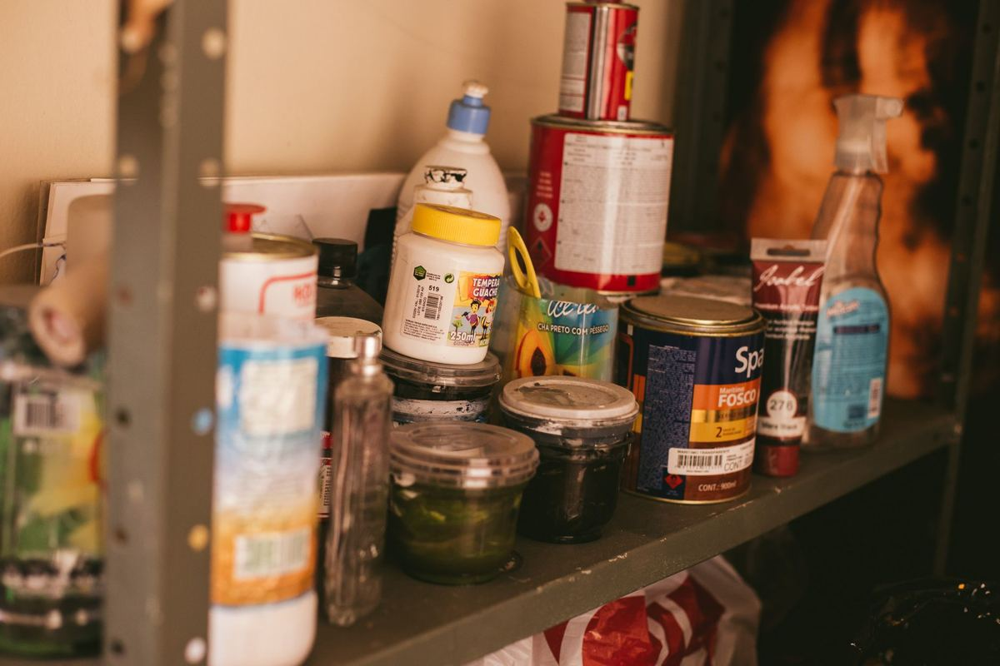

We take almost anything non-hazardous that two people can carry out of a house or a yard. Furniture, appliances, mattresses, electronics, hot tubs, sheds, brush, remodel debris, a whole garage, a whole estate. The short list of what nobody can haul is household hazardous waste: paint, motor oil, gasoline, propane tanks, chemicals, and asbestos.

Most people call already half apologizing for the pile. You do not have to. Here is the honest inventory of what goes on the trailer, what does not, and what actually happens on the day.
What goes on the trailer
The simplest way to think about it is physical rather than legal. If two people can lift it and it will not poison the crew or the landfill, it goes.
- Furniture. Sectionals, recliners, dining sets, bed frames, dressers, desks, office chairs, patio sets. Broken counts. Soaked counts.
- Mattresses and box springs. Every size, including the ones donation centers turn away. Mattress disposal in DFW covers the city and recycling routes as well.
- Appliances. Refrigerators, freezers, washers, dryers, dishwashers, ranges, water heaters, microwaves.
- Electronics. TVs of any vintage, computers, monitors, printers, stereo equipment, treadmills that became clothing racks.
- Whole rooms. Garages, attics, sheds, basements where North Texas has one, storage units, and whole estates.
- Yard debris. Brush, branches, leaves, old fence panels, pulled shrubs, sod, and storm damage. See yard debris removal for how those loads run.
- Backyard structures. Hot tubs, above-ground pools, swing sets, playhouses, trampolines, and sheds. These get cut apart and carried out. Above-ground pool removal walks that teardown through stage by stage.
- Remodel and construction debris. Cabinets, countertops, drywall, trim, flooring, doors, windows, and packaging. Our construction debris removal page covers what a job-site pickup looks like, and what a remodel really leaves behind covers the lead paint and asbestos side that no hauler should touch.
- The miscellaneous. Boxes, bags, exercise equipment, bicycles, toys, carpet and pad, grills, and the thing in the corner you have stopped seeing.
If you are looking at something not on that list, it is almost certainly still fine. The list is long because the job is broad, not because the edges are strict.
What we will not take
This part is short, and none of it is us being difficult. Household hazardous waste is regulated, and no licensed hauler in Texas can put it in a transfer station load.
- Paint, stain, and solvents
- Motor oil, gasoline, and antifreeze
- Propane tanks
- Pesticides, pool chemicals, and household chemicals
- Asbestos and anything containing it
- Medical waste and sharps
Almost every city in the northern suburbs runs a household chemical collection program that takes these from residents for free. Dallas residents use the Home Chemical Collection Center, and Plano runs its own household chemical collection for residents. If you are not sure which program covers your address, the state keeps a plain-English rundown in the TCEQ household hazardous waste guide for Texans, or ask us and we will point you at your city's page. It costs you nothing and it is the correct answer, so we would rather send you there than pretend otherwise.
Two other categories are not refusals so much as different jobs. Very dense material like concrete, dirt, brick, shingles, and tile has to be handled differently from ordinary household junk, so we look at it and talk it through before we book. And anything that requires opening up a wall to get out is a contractor's job before it is ours.
The one question worth asking any hauler: is disposal included in the number. With us it is, which is why the quote is the bill. If you are getting quotes elsewhere, ask that out loud before you book. It is the most common surprise on a final invoice in this trade.
How a pickup actually runs
Most people are more nervous about the process than the pile, so here is the whole thing start to finish.
You tell us what you are looking at. A few photos from your phone is enough for most jobs. For a full house or a packed garage we will come look in person.
We give you a number before anything is lifted. The crew looks at what you actually have and quotes it firm, with no weight tickets and no hourly clock. Disposal is inside that number. You approve it or you do not, and there is no pressure either way.
You point, we carry. You do not move anything to the curb. We go into the garage, up the stairs, into the back bedroom, out to the shed. Our crews are our own people, not gig labor hired off an app that morning, which is the whole reason we can send them inside your house.
We sweep. The spot where the thing sat gets swept before we go, which is the part most people mention afterward.
The load gets sorted, not just dumped. Usable furniture and appliances go to local donation partners. Metal and cardboard go to recyclers. The goal on every load is to keep more than half of it out of the landfill. Where your junk actually goes walks through that sort step by step.
How you get a number and how fast we can get there
Disposal is included in the number and we keep it fair. We are a father-and-son operation with our own crew, not a franchise paying a national ad budget out of your invoice. Every job gets a number up front, and if the honest answer is that your city's bulky-trash pickup will handle it for free, we will tell you that instead of taking your money. Dallas sets out brush and bulky items on a monthly schedule, and Plano runs bulky waste collection on its own calendar, so it is worth checking yours first.
On timing: we run pickups seven days a week. Call before noon and same afternoon is typical across Plano, Allen, Frisco, McKinney, Richardson, Little Elm, Prosper, The Colony, Wylie, and Fairview. After noon, the worst case is normally the next morning's first slot. We say typical rather than guaranteed because traffic and job size are real.
Two jobs come with their own rules on top of this list. A packed house is covered in hoarding cleanouts, handled quietly, and a rented unit with gate hours and a broom-clean requirement is covered in storage unit junk removal. Appliances and old televisions have rules of their own, which are laid out in appliance and electronics disposal in North Texas, and a unit that has to be empty by a lease date is covered in apartment junk removal.
For the specifics by job type, see same-day junk removal, appliance removal, or the full services list. When you want a free quote, tell us what you have and we will come look.
Frequently asked questions
Do I have to move everything outside first?
No. You point, we carry, we sweep. The crew goes wherever the items are, including upstairs, in the attic, and out in the shed.
Will you take a single item?
Yes. One recliner, one fridge, one mattress. Single-item pickups are a normal part of the week, and they get a number the same way a whole houseful does.
What happens to everything after you haul it?
Usable furniture and appliances go to local donation partners, metal and cardboard go to recyclers, and the rest goes to the transfer station. We aim to keep more than half of every load out of the landfill.
Can you come the same day?
Usually. Call before noon and same afternoon is typical across the northern suburbs. After noon, the next morning's first slot is the normal worst case. We do not promise same-day, because promising it would mean breaking it.
What do I do with paint and old chemicals?
Your city's household chemical collection center takes them from residents for free. We do not haul them, and neither can anyone else licensed. Ask us and we will send you your city's page.
If you are staring at something and wondering whether it counts, send a photo. The answer is usually yes, and when it is no we will tell you exactly where it should go instead.